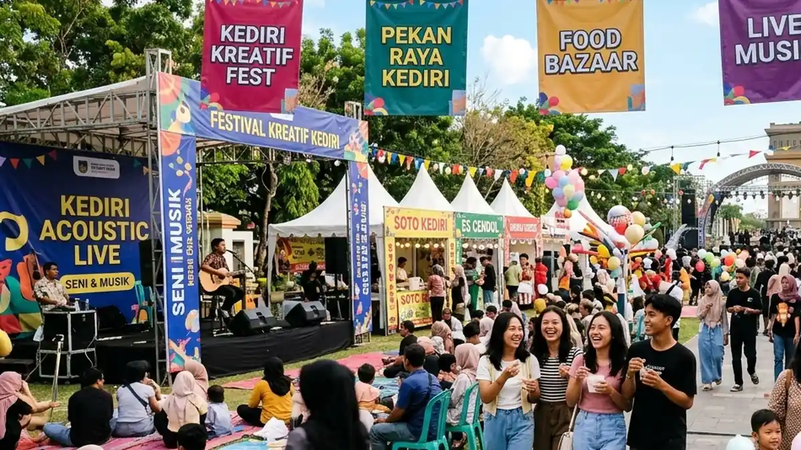

Daftar Isi Artikel
- Ringkasan Agenda Jumat-Minggu (30 Oktober-1 November 2026)
- Youth Fest Kota Kediri 2026: Hiburan, Bazar, dan Voucher Makan
- Event Olahraga Akhir Pekan: Kelud Vertical Challenge dan Persik vs Persita
- Rekomendasi Kuliner dan Nongkrong Dekat Venue
- Cara Memakai Halaman Ini dan Mengajukan Event
- Pertanyaan yang Sering Diajukan (FAQ)
Kediri Event — Akhir pekan 30 Oktober sampai 1 November 2026 di Kediri diisi Youth Fest Kota Kediri di Kawasan Wisata Selomangleng pada 31 Oktober dan 1 November, Kelud Vertical Challenge pada 1 November pagi, serta laga kandang Persik melawan Persita pada 1 November pukul 15.30 WIB.
Ringkasan Inti Agenda Akhir Pekan Kediri:
- Festival Pemuda: Youth Fest Kota Kediri digelar 31 Oktober-1 November 2026 di Kawasan Wisata Selomangleng, mulai pukul 07.00 WIB.
- Lomba Lari Tanjakan: Kelud Vertical Challenge berlangsung Minggu, 1 November 2026, dengan start pukul 04.00 dan 06.00 WIB di Gunung Kelud.
- Laga Super League: Persik Kediri menjamu Persita pada Minggu, 1 November 2026, pukul 15.30 WIB di Stadion Brawijaya.
- Hari Jumat Lengang: Kami belum menemukan event besar berskala massal yang terjadwal pada Jumat, 30 Oktober 2026.
- Update Berkala: Halaman ini diperbarui setiap Kamis dengan agenda akhir pekan berikutnya agar rencana liburan Anda selalu akurat.
Ringkasan Agenda Jumat-Minggu (30 Oktober-1 November 2026)
Tiga agenda utama akhir pekan ini adalah festival anak muda di Selomangleng, event lari di Gunung Kelud, dan laga kandang Persik, dengan Sabtu dan Minggu sebagai hari tersibuk bagi penikmat hiburan dan olahraga:
| Hari & Jam | Event | Lokasi | Catatan |
|---|---|---|---|
| Jumat, 30 Okt 2026 | Belum ada event besar terjadwal | - | Cek Kamis Depan |
| Sabtu, 31 Okt 2026 Mulai 07.00 WIB |
Youth Fest Kota Kediri (Hari 1) | Kawasan Wisata Selomangleng | Bazar & Musik |
| Sabtu, 31 Okt 2026 Sepanjang Hari |
Pengambilan Race Pack Kelud Vertical Challenge | Convention Hall SLG | Khusus Peserta |
| Minggu, 1 Nov 2026 Mulai 07.00 WIB |
Youth Fest Kota Kediri (Hari 2) | Kawasan Wisata Selomangleng | Puncak Acara |
| Minggu, 1 Nov 2026 04.00 & 06.00 WIB |
Kelud Vertical Challenge (20K & 10K) | Gerbang Wisata Gunung Kelud | Kuota 750 Pelari |
| Minggu, 1 Nov 2026 15.30 WIB |
Persik Kediri vs Persita | Stadion Brawijaya Kediri | Super League |
Youth Fest Kota Kediri 2026: Hiburan, Bazar, dan Voucher Makan
Youth Fest Kota Kediri 2026 bertema "Dari Pemuda Untuk Pemuda" menghadirkan hiburan musik, atraksi seni, bazar UMKM, games, layanan adminduk, dan 1.000 voucher makan gratis di Kawasan Wisata Selomangleng pada 31 Oktober dan 1 November 2026.

Suasana panggung hiburan musik dan keramaian festival anak muda di kawasan wisata Selomangleng.
- Hiburan Musik & Seni: Penampilan live band lokal, pertunjukan DJ, atraksi barongsai, dan dance party meriah.
- Bazar UMKM & Games: Menghadirkan deretan stan kuliner kekinian dan permainan seru untuk rekreasi keluarga serta sahabat.
- Layanan Adminduk Cepat: Pengunjung dapat memanfaatkan booth layanan administrasi kependudukan di lokasi acara.
- Panggung Talent: Pendaftaran talent dibuka terbuka bagi komunitas seni yang ingin tampil unjuk bakat.
Informasi tiket masuk dan susunan acara per jam tidak tercantum pada sumber yang kami temukan, jadi pastikan mengecek akun resmi penyelenggara sebelum berangkat.
Event Olahraga Akhir Pekan: Kelud Vertical Challenge dan Persik vs Persita
Kelud Vertical Challenge berlangsung pagi hari pada 1 November, sedangkan Persik vs Persita baru dimulai pukul 15.30 WIB, sehingga dua agenda ini dapat diikuti pada hari yang sama bila perjalanan direncanakan secara cermat.
- Kelud Vertical Challenge 2026: Menyajikan kategori 20K Trail Run (start 04.00 WIB) dan 10K Road Run (start 06.00 WIB) menuju kawah Gunung Kelud. Pelajari selengkapnya pada panduan Kelud Vertical Challenge 2026.
- Laga Panas Macan Putih: Persik Kediri menjamu Persita di Stadion Brawijaya pada sore harinya. Simak ulasan jadwal di jadwal Persik kandang 2026/27 serta panduan tiket di cara beli tiket Persik.
Bagi pengunjung yang berencana mengikuti lomba lari pagi di Gunung Kelud dan melanjutkan menonton sepak bola sore hari di Stadion Brawijaya, perhitungkan waktu tempuh sekitar 60-75 menit dari lereng Ngancar menuju pusat Kota Kediri.
Rekomendasi Kuliner dan Nongkrong Dekat Venue
Setelah beraktivitas sepanjang pagi dan siang hari, pengunjung dapat melanjutkan malam akhir pekan dengan berburu kuliner lezat dan bersantai di Kota Kediri maupun kawasan Simpang Lima Gumul (SLG):
- Kuliner Khas Kediri: Nikmati soto kediri gurih bersantan, tahu takwa kuning legendaris, serta pecel tumpang khas Jalan Dhoho.
- Kuliner Malam Simpang Lima Gumul: Jika agenda Anda berakhir di sekitar SLG, jelajahi 7 spot kuliner malam terdekat Simpang Lima Gumul yang buka hingga larut malam.
- Kawasan Kafe Selomangleng: Seusai menikmati Youth Fest, deretan kedai kopi berkonsep kebun di kaki Gunung Klotok cocok untuk santai sore bersama teman.
Cara Memakai Halaman Ini dan Mengajukan Event
Halaman ini diperbarui setiap hari Kamis, sehingga pembaca cukup menyimpan satu alamat tautan untuk melihat agenda akhir pekan terbaru, dan pihak penyelenggara dapat mengajukan info acara melalui kontak admin.
- Simpan Tautan: Simpan halaman ini di browser Anda dan buka kembali tiap hari Kamis untuk melihat jadwal akhir pekan mendatang.
- Konfirmasi Ulang: Cek kembali pengumuman penyelenggara pada hari-H karena jam pertunjukan dan lokasi dapat mengalami penyesuaian teknis.
- Publikasi Acara Komunitas: Bagi komunitas atau EO yang ingin acaranya dicantumkan pada edisi pekan depan, hubungi tim kami via WhatsApp.
Pertanyaan yang Sering Diajukan (FAQ)

Ditulis oleh: Erlang Sinatrya Putra Yusya
Event Content Specialist & EditorSpesialis kurasi agenda akhir pekan, rekomendasi wisata kota, dan liputan pertandingan olahraga di Kediri Event. Berkomitmen menyajikan panduan liburan akhir pekan yang segar, akurat, dan terverifikasi.
Profil Kediri Event